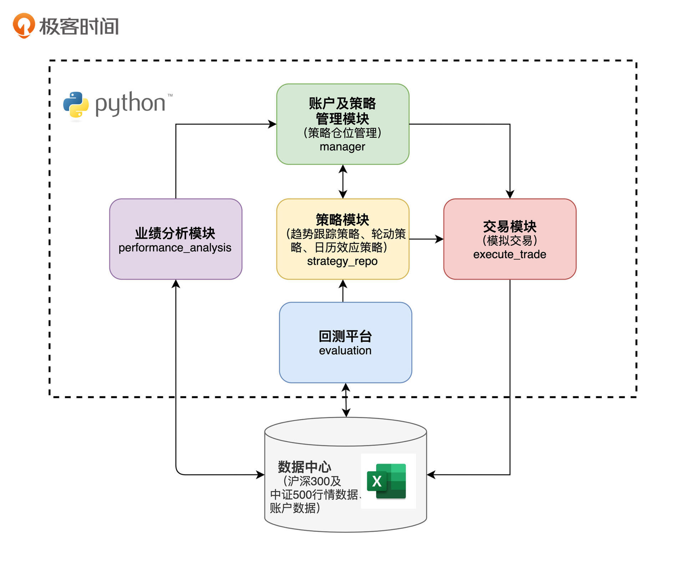
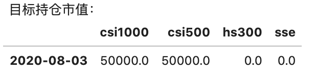
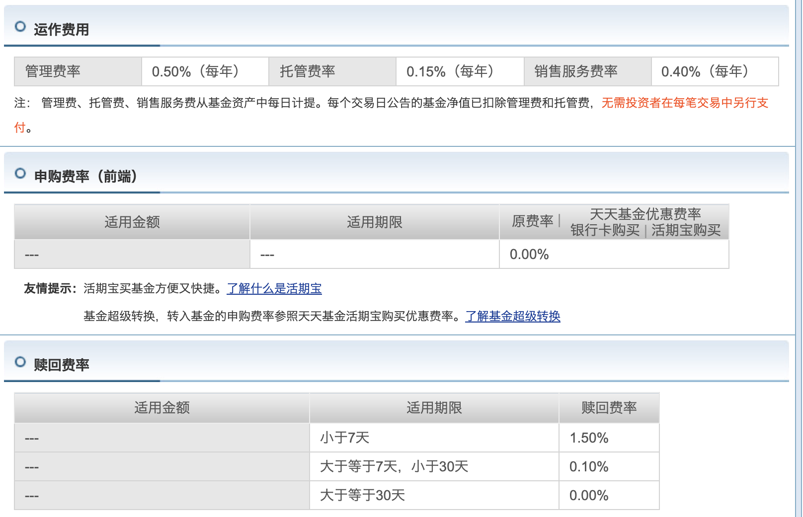
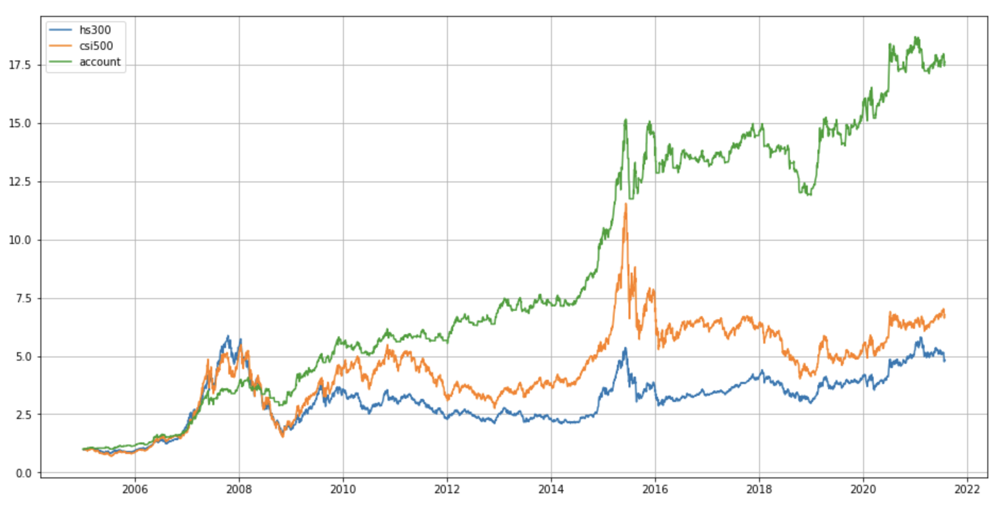
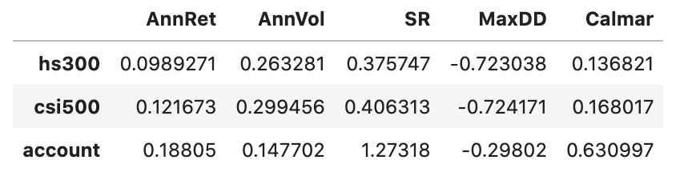

- 00 开篇词 为什么说程序员最适合学财富管理？.md.html
- 01 财富框架：建立属于你自己的财富双塔.md.html
- 02 个人发展：你自己的发展才是最大的财富源泉.md.html
- 03 理财金字塔：如何建立稳固的投资理财结构？.md.html
- 04 实战知识：有哪些收益稳健的经典资产配置组合？.md.html
- 05 支点投资法：主动投资是讲逻辑的！.md.html
- 06 不当韭菜：在财富管理的过程中摆正心态，知己知彼.md.html
- 07 职业方向：如何选择一个有前景的职业方向？.md.html
- 08 职业规划：大公司VS小公司，怎样选择更有前途？.md.html
- 09 期权股权：如何正确处理公司的期权、股权？.md.html
- 10 跳槽涨薪：如何规划一条合理的职业道路？.md.html
- 11 财富拓展：35岁失业？程序员如何拓宽财富渠道？.md.html
- 12 房产投资：如何做出理性的买房决策？.md.html
- 13 实战知识：让我们编程计算下怎么还房贷最合适.md.html
- 14 基金投资：如何让专业人士帮你赚钱？.md.html
- 15 实战知识：如何选出一只优质的基金？.md.html
- 16 股票投资：最适合散户的股票投资方法是什么？.md.html
- 17 投资闭环：如何成为越来越专业的投资者？.md.html
- 18 技术优势：程序员如何用技术超越其他投资者？.md.html
- 19 量化投资：典型的量化投资系统都包含哪些模块？.md.html
- 20 价值投资：永远不过时的中长期投资策略.md.html
- 21 趋势跟踪：怎样跟着趋势一起赚钱？.md.html
- 22 轮动策略：如何踩准市场变换的节奏？.md.html
- 23 对冲思想：这个世界上有稳赚不赔的生意吗？.md.html
- 24 多因子模型：整合不同策略，形成合力的顶层框架.md.html
- 25 机器学习：我们能用机器学习来建立投资模型吗？.md.html
- 26 量化实战：从0到1搭建起一套简单的量化投资系统（上）.md.html
- 27 量化实战：从0到1搭建起一套简单的量化投资系统（下）.md.html
- 番外一 王喆对话李腾：程序员对基金经理的灵魂十问（上）.md.html
- 番外三 有哪些能够持续学习的参考资料和相关网站？.md.html
- 番外二 王喆对话李腾：程序员对基金经理的灵魂十问（下）.md.html
- 番外四 知识总结：这门课的全部思维导图.md.html
- 答疑课堂（一） 财富框架篇、个人发展篇思考题集锦.md.html
- 答疑课堂（二） 投资实战篇、投资进阶篇思考题集锦.md.html
- 结束语 知行合一：财富管理是一生的事情.md.html
- 捐赠
27 量化实战：从0到1搭建起一套简单的量化投资系统（下）
你好，我是王喆。这一讲，我们继续进行量化投资实战项目的学习。
上一讲中，我们一起学习了量化投资项目的技术框图，我讲解了其中的数据中心、策略模块和回测平台三个模块。今天我们来继续学习剩下的模块，包括管理模块、业绩分析模块和模拟交易模块。

管理模块：策略顶层配置方案的制定者
我们在 19讲 的时候就已经明确了，管理模块是整个系统的绝对核心。一家专业的量化投资公司，每天开盘前做的第一件事就是运行管理模块，分析之前的历史交易，得到当天交易的顶层配置方案。这里的顶层配置方案，可以是不同策略之间的权重占比，也可以是具体投资标的的持仓方案。在实际执行过程中，需要根据公司不同的风格来决定。
那就回到我们的量化投资系统。上一讲，我们已经通过回测平台决定了不同策略之间的权重，即日历策略占50%，可空仓轮动策略占50%。那么，为了制定出当天交易的详细方案，管理模块需要根据不同策略的权重，制定出一个可行的“持仓目标”。下面的程序就是来完成这个过程的。
"""
开盘前
"""
T = datetime.date(2020,8,3) # 设置拟交易日期
target_amount = 100000 # 目标投资金额
# 读取基础数据：截止T-1日
data = get_hist_data(end_date=T-datetime.timedelta(days=1))
# 生成目标组合权重
target_wgt1 = calendar_stgy(data, start_date=T, end_date=T, params={'index_id':'csi1000', 't1':1, 't2':5})
target_wgt2 = rotation_stgy1(data, start_date=T, end_date=T, params={'N':20})
target_wgt = 0.5*target_wgt1 + 0.5*target_wgt2
# 输出目标持仓市值
target_mv = target_wgt * target_amount
print('目标持仓市值：')
display(target_mv)
我们假设今天的交易日期是2020年8月3日，可用的资金总额是100000元。首先，通过get_hist_data函数从数据中心读出截止到上一个交易日的历史数据；然后，利用在回测平台测试好的混合策略，生成今天的目标持仓target_wgt；最后，用目标持仓乘以资金总额，就得到了今天我们希望达成的各标的的目标持仓市值target_mv。
通过打印target_mv可以看到，我们今天希望把资金调整成下面的分布：中证1000指数（csi1000）投资50000元，中证500指数（csi500）投资50000元。

在确定了目标持仓之后，管理模块就会调用交易模块来执行具体的交易，以达成上面得到的交易目标。在一天的交易结束之后，管理模块还会调用业绩分析模块，来分析总结当天的盈亏情况。接下来，我就分别讲解下交易模块和业绩分析模块。
交易模块：交易的实际执行者
交易模块是交易的实际执行者。在真实的量化投资系统中，我们会通过两种方式实现交易模块。
一种是自动化交易。它是通过调用交易所或第三方公司提供的交易API来实现的。例如，我们在18讲中提到的CTP接口，就是上海期货交易所提供的供期货自动化交易的API。
另一种是交易员手动交易。交易员会根据量化投资系统生成的交易目标，通过手动下单的方式来完成这个交易目标。
我们这个项目选择了模拟手动交易的方式，没有创建真实的交易模块，主要是因为股票交易目前还没有官方的或合法的针对散户的交易API。因此，我们无法实现真实意义上的自动化交易。在进行业绩分析的时候，我们会假设系统的交易总是可以达成当天的交易目标。针对沪深300等指数，这个假设也是充分合理的，因为散户的资金量有限，我们总是可以非常容易地达成当天的交易仓位目标。
这时候，可能有同学会问了：对于沪深300、中证500这些指数，我们应该投资什么标的呢？这是个好问题，因为它们并不是某一只具体的股票，没有办法直接通过购买个股的方式来投资。这里我介绍两种方便且手续费低廉的投资指数的方法。
第一种方法是我最推荐的，就是场内ETF基金。场内基金就是指在股票交易所挂牌上市的基金，像股票一样能够用股票账户进行买卖交易。也就是说，只要你开了股票账户，就能够交易场内基金。而且场内ETF基金的交易费率非常低，只有万分之一到万分之五。
与之对应的就是场外基金了，它指的就是平时我们可以在支付宝等理财App上购买的基金。它的申购费率一般在1%左右，即使打折后也要0.15%左右。而且，如果你短期卖出的话，还要收1.5%的卖出费用。和场内基金比起来，这是非常昂贵的交易费用。
我推荐的第二种方法是场外的C类基金。如果你没有股票账户，但是希望频繁交易指数基金，那么场外C类基金也是一个可行的选择。C类基金的特点是申赎费用几乎可以忽略不计，但是会增加一个每年0.4%左右的基金销售服务费用。这个特点就让C类基金特别适合作为可以频繁交易的指数基金。
举例来说，图3显示了中金沪深300C这支C类基金的费率明细，具体的数据你可以看这个链接。从这张图里你可以看到，申购费率是0。至于赎回费率（即卖出费率），如果7天之内卖出，收1.5%；如果大于7天小于30天，是0.1%；大于30天，是0%。这样的交易费率，对于交易策略是非常友好的。比如我们系统使用的日历策略和轮动策略，交易频率往往是月级别的，那么交易C类基金时就几乎不需要支付手续费。

所以总的来说，我们系统的交易模块是一个模拟的交易模块，在管理模块生成目标仓位后，通过手动购买场内ETF或C类基金来执行。由于我们的策略是周到月级频率的，交易费用可以忽略不计，所以整个手动交易过程是完全可行的。
业绩分析模块：来看看我们的收益是多少
交易模块在执行每次交易后，会把交易的成交结果记录在账户持仓记录表中。然后，我们就可以调用业绩分析模块，来分析我们到底赚了多少钱了。
下面就是业绩分析模块的代码：
"""
业绩分析：定期进行
"""
# 从账户持仓记录表读取持仓市值数据
hold_mv = pd.read_csv('账户持仓记录表.csv').set_index('date')
hold_mv.index = [datestr2dtdate(e) for e in hold_mv.index]
start_date = hold_mv.index[0]
end_date = hold_mv.index[-1]
# 化为权重
hold_wgt = hold_mv.iloc[:,0:4].copy()
for t in hold_wgt.index:
hold_wgt.loc[t] = hold_wgt.loc[t] / hold_mv.loc[t,'amount']
# 计算净值
data = get_hist_data(end_date=end_date)
asset_ret = data.pct_change().loc[start_date:end_date]
res = (1+asset_ret).cumprod()
res['account'] = (1+(hold_wgt.shift(1) * asset_ret).sum(axis=1)).cumprod()
# 展示净值曲线图和业绩指标表
res.loc[:,['hs300','csi500','account']].plot(figsize=(16,8), grid=True)
cal_period_perf_indicator(res.loc[:,['hs300','csi500','account']])
这里是怎么计算净值，并算出策略业绩的呢？我们可以结合上面的代码来过一遍这个过程。
- 第4行到第8行：从账户持仓记录表里读出了账户每天持有四个指数的市值；
- 第11到第13行：根据持仓市值计算出了持仓权重；
- 第16到第17行：计算出了这四个指数每天的涨跌幅；
- 第19行：这一行是计算账户净值的核心。它就是用每个指数的昨收权重，乘以该指数当天的涨跌幅，然后对四个指数的乘积结果求和，这就是当天账户整体的涨幅。将账户每天的涨幅加1再累乘，就得到了账户净值序列；
- 第22行：画出了净值走势图；
- 第23行：根据净值计算出了各种业绩指标。
这里你需要注意的是业绩分析模块和回测模块中业绩分析部分的区别。在真实的量化投资系统中，业绩分析模块的输入一定是交易的实际成交记录，而不是回测过程中的模拟交易记录，这两者是有一定区别的。
我们来看一个例子：在某个交易日，管理模块发给交易模块的指令是“以不高于每股26元的价格购买10000股公司A的股票”，但是由于在一个交易日内股票价格总是在波动，所以实际成交价总是跟目标成交价有所偏离的。
比如，交易模块分3次购买了共10000股公司A的股票，平均成交价是25.6元，这就低于管理模块输出的目标价格26元。在业绩分析模块计算实际业绩时，就要利用账户持仓记录表或者交易记录表中记录的真实交易记录、持仓情况、交易价格来计算准确的业绩。
其实公司越大，掌握的资金越多，实际交易结果跟交易目标产生偏差的可能性越大。假设我们的“量化一号”管理了10个亿的资金，这时如果今天计划买入价值1个亿的公司A的股票，那么就极有可能在买入过程中抬升股价，造成无法按照目标价格成交的现象。这时，不仅要求我们通过实现更合理的交易策略来完成交易，在进行业绩分析时也要精准地根据每笔交易的实际成交结果来得出业绩结果。而不是像回测过程中那样，只考虑理想状态下的目标交易结果。
下面的图4就是我们调用业绩分析模块得出的“量化一号”的净值曲线。其实上一讲在开始的时候已经给出了“量化一号”的效果，这里我们再回顾一下最关键的两个指标：年化收益18.8%，最大回撤29.8%，都比沪深300和中证500指数好很多。再来看综合性的衡量指标，夏普率。在这个维度上，“量化一号”更是达到了1.27，比沪深300的0.38和中证500的0.41都高出不少，其实已经摸到了专业量化产品的门槛。


当然，我们在这里列出“量化一号”的业绩指标，主要是想给你传达这样的信心：普通投资者是可以通过投入一定时间，构建出一套切实可行、效果优于指数定投，甚至基本达到专业量化产品门槛要求的投资策略的。你看，专业投资者和咱们程序员投资者之间，并没有那么大的鸿沟，如果能够充分利用我们的程序员优势，是可以通过量化投资来大幅提升我们的收益率的。
借助量化平台的力量，聚焦策略开发
好了，到这里我已经完成了对量化投资系统剩余三个模块的讲解。我们最后来看一个问题：如何解决数据、交易接口等问题，来高效地构建一套真正可用的量化投资系统？
在之前的课程中，有很多同学在留言区问我关于数据和交易接口的问题，比如问有没有公开的、免费的股票或者期货数据，或者有没有可以支持自动化交易的好用的API。这里我可以统一回复下：答案是没有。因为天底下没有免费的午餐。免费的、稳定的、可供随意获取的交易数据源目前是没有的，而万德等专业的交易数据库，费用又是普通投资者不能承受的。
至于交易API，只有期货的CTP接口是普通投资者能够申请下来的，而且它也有一定门槛。股票类的交易API，干脆对普通投资者完全不开放。
那我们就没有办法进行量化投资了吗？当然不是。上面说的情况，只是说明我们还没有一个完美的解决方法，并不意味着搭建量化投资系统是完全不可行的。这时候就要开阔我们的思路，不要总是用完美主义的心态来看待一个问题。
其实，量化投资是一整套解决投资问题的思路。我们完全可以利用量化投资产生交易信号，然后根据交易信号手动交易，来实现个人的量化系统。更何况，我不止一次强调过，我们散户的交易优势在于一些中长期的交易策略。有些量化策略的交易信号一周，甚至一个月才会产生一次，这根本不会给我们增加太多的交易成本。
如果我们再“懒”一点，连回测平台、数据中心也不想自己开发，只想聚焦于发现能够盈利的交易策略，有没有可行的方案呢？其实也是有的。现在市面上成熟的量化交易平台已经不止一家，它们不只在回测平台内提供免费的回测数据，还提供用来编写和测试策略的线上编译器，甚至还支持交易信号的触达服务，比如通过手机短信、微信小程序的形式发到你的手机上。这样一来，就完全可以利用这些量化交易平台实现我们的量化策略+手动交易的方案了。
因为市面上的量化交易平台的同质化问题比较严重，这里就不做具体的推荐了。你只要搜索量化交易平台，然后在最靠前的几家中选择一家学习和研究就可以了。希望你能借助这些平台的力量，聚焦策略开发，落地你的量化交易想法！
小结
今天，我们完成了对量化投资系统剩余三个模块的讲解。希望你学完之后，能够更深入理解典型量化投资系统的框架和实现方法。我把今天的要点总结在这里，你可以再回顾一遍：
- 管理模块是整个系统的绝对核心，我们的项目在开盘前调用管理模块，得到当天具体的目标仓位。
- 交易模块是交易的实际执行者。在真实的量化投资系统中，系统会通过自动化交易或者手动交易的方式执行交易模块的功能。
- 业绩分析模块通过分析实盘交易结果，得到系统的业绩情况。
- 接入成熟的量化交易平台可以帮你聚焦在量化策略的研发上，实现量化策略+手动交易的方案。
学完这一讲，我们就完成了整个投资进阶篇的学习。你可以把最后两讲里的量化投资项目当作整个模块的大作业，完成这个作业之后，我们可以说是把投资策略相关的知识融会贯通了。对于如何实现策略，如何确定策略参数，如何根据策略进行交易这些关键问题，我想你已经有了比较清晰的认识。
但我们也要明确一点：这两讲只是搭建起了一个相对简单的量化投资系统，和专业的量化投资系统比起来，很多地方还有待完善。不过，这门课的目的已经达到了：我们的项目是一个起点，一个Demo，它可以为我们的业余投资提供很好的支持。如果你有志于从事量化投资这个行业，可以在这个项目的基础上继续精进。如果这门课能成为你入行的起点，也是我们莫大的荣幸。
思考题
到这里，投资进阶篇这个模块我们已经全部学完了。今天的思考题，我希望是一个发散的讨论：你还知道哪些投资策略？或者说，在投资过程中，你冒出过哪些有可能形成策略的想法？
欢迎你在评论区畅所欲言。不用管这些想法是否成熟，让我们一起交流那些天马行空的想法，让自己的思路更加开阔吧。
© 2019 - 2023 Liangliang Lee. Powered by gin and hexo-theme-book.